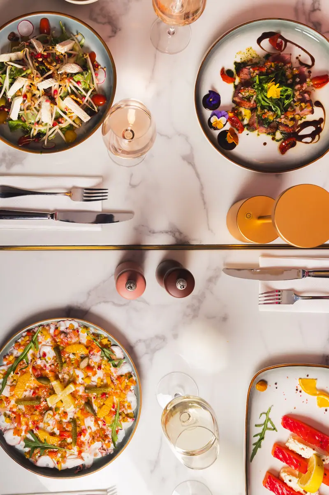
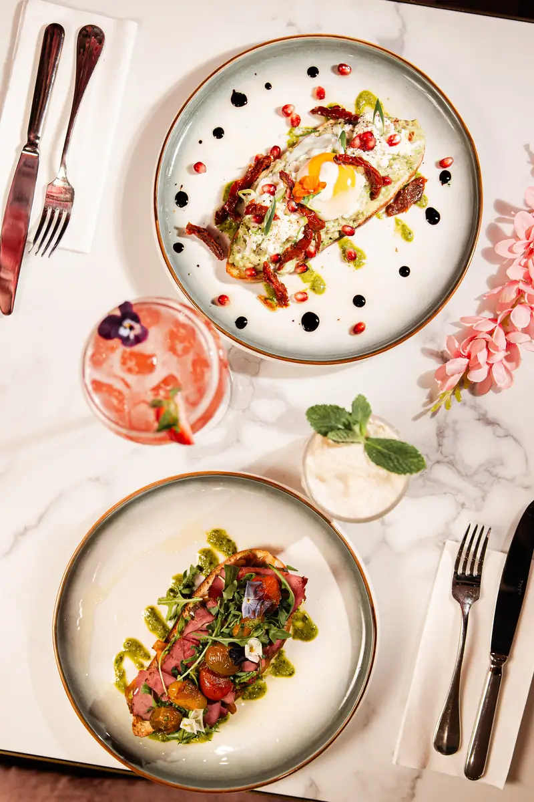
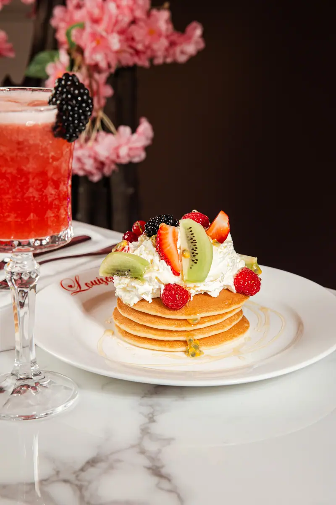
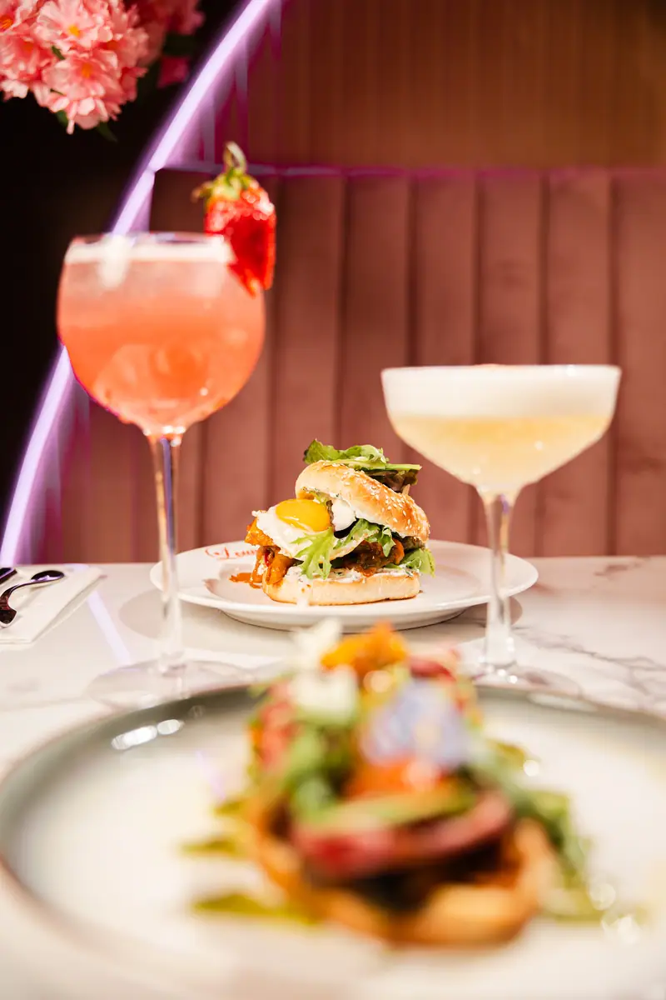

Le brunch
du week-end.
Le samedi et le dimanche, de 11 h à 18 h, La Maison Louisette sert son brunch au 8 boulevard Saint-Denis, à Paris 10e, au pied du métro Strasbourg-Saint-Denis. Une formule à 29 €, sans supplément, une formule enfant à 14 €, et les cocktails du brunch servis tout l’après-midi.
À la table du brunch




La formule, en entier.
Le Brunch Louisette, 29 €. Une boisson chaude au choix — café, thé ou chocolat —, une viennoiserie avec pain et beurre, une assiette salée au choix et des pancakes. Sans supplément, quelle que soit l’assiette choisie.
L’assiette salée, au choix
- Gaufre au poulet — poulet croustillant, avocat, œuf au plat, sauce aigre-douce.
- Avocado toast — pain de campagne, avocat écrasé, feta, pickles.
- Croque Louis — jambon blanc, emmental, crème fraîche.
- Croque Louisette — le Croque Louis et son œuf au plat.
- Œufs au choix — brouillés, au plat ou en omelette.
- Saumon-avocat — gravlax maison, avocat, tzatziki, salade, citron.
Pour les enfants
Le Brunch des Petits, 14 €, jusqu’à 10 ans : un chocolat chaud, une viennoiserie, des œufs brouillés et des pancakes.
À côté de la formule
Granola maison, pancakes classiques ou brioche perdue à 10 €. Les assiettes salées se commandent aussi à la carte, de 12 à 16 €. Tous les prix, les descriptions et les allergènes plat par plat sont sur la carte du brunch.
Ce que l’on boit au brunch.
Mimosa et bellini à 9 €, aperol spritz à 10 €, bloody mary, espresso martini et pornstar martini à 12 €. Les mocktails — virgin mojito, virgin colada, red tea, basil smash fizz — sont à 9 €, les jus de fruits à 6 €. L’abus d’alcool est dangereux pour la santé, à consommer avec modération.
Venir au brunch.
| Jours et heures | Samedi et dimanche, de 11 h à 18 h |
|---|---|
| Adresse | 8 boulevard Saint-Denis, 75010 Paris |
| Métro | Strasbourg-Saint-Denis, lignes 4, 8 et 9 |
| En semaine | Petit-déjeuner dès 8 h (9 h le dimanche), déjeuner du lundi au vendredi : voir le matin et le midi |
| En groupe | Voir groupes et privatisation |
Le week-end, la salle se remplit vite à partir de midi : mieux vaut réserver. Pour une table en terrasse, les conditions sont sur la page terrasse.
Les dates qui valent le déplacement.
Vingt-sept salles de spectacle sont à un quart d'heure de la maison, et le comptoir a ses soirées. Une fois par mois, nous envoyons les dates à retenir : les DJ, les soirées, ce qui change à la carte. Rien d'autre.
Vous vous désinscrivez en un clic. Votre adresse ne part chez personne, et ne sert qu'à ça.
M’inscrire — ouvre votre messagerie
Le message est déjà rédigé : il ne reste qu’à l’envoyer, et il vaut preuve de votre accord. Si votre téléphone n’ouvre rien, écrivez-nous à contact@louisette-paris.com. Voir la politique de confidentialité.
Une table pour dimanche ?
Brunch le samedi et le dimanche, de 11 h à 18 h, 8 boulevard Saint-Denis, Paris 10e.